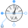
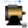

IMC_CharacteristicsCharacteristic curves of Induction machine with squirrel cage |
|
Diagram
{kind=link}
Information
This information is part of the Modelica Standard Library maintained by the Modelica Association.
This examples allows the investigation of characteristic curves of quasi-static polyphase induction machines with squirrel cage rotor as a function of rotor speed.
Simulate for 1 second and plot (versus imcQS.wMechanical or perUnitSpeed):
currentSensorQS.abs_i[1]: (equivalent) RMS stator currentimcQS.tauElectrical: machine torqueimcQS.powerBalance.powerStator: stator powerimcQS.powerBalance.powerMechanical: mechanical power
Parameters (6)
| m |
Value: 3 Type: Integer Description: Number of phases |
|---|---|
| VsNominal |
Value: 100 Type: Voltage (V) Description: Nominal RMS voltage per phase |
| fNominal |
Value: imcData.fsNominal Type: Frequency (Hz) Description: Nominal frequency |
| w_Load |
Value: 1440.45 * 2 * Modelica.Constants.pi / 60 Type: AngularVelocity (rad/s) Description: Nominal load speed |
| p |
Value: imcData.p Type: Integer Description: Number of pole pairs |
| imcData |
Value: Type: IM_SquirrelCageData Description: Induction machine data |
Outputs (1)
| Iqs |
Default Value: iSensorQS.I Type: Current (A) Description: QS RMS current |
|---|
Components (12)
| vSourceQS |
Type: VoltageSource |
|
|---|---|---|
| starQS |
Type: Star |
|
| groundQS |
Type: Ground |
|
|  | pSensorQS |
Type: PowerSensor |
| iSensorQS |
Type: CurrentQuasiRMSSensor |
|
| imcData |
Type: IM_SquirrelCageData Description: Induction machine data |
|
|  | imcQS |
Type: IM_SquirrelCage |
| groundMachineQS |
Type: Ground |
|
| starMachineQS |
Type: Star |
|
| terminalBoxQS |
Type: MultiTerminalBox |
|
| speed |
Type: Speed |
|
| ramp |
Type: Ramp |